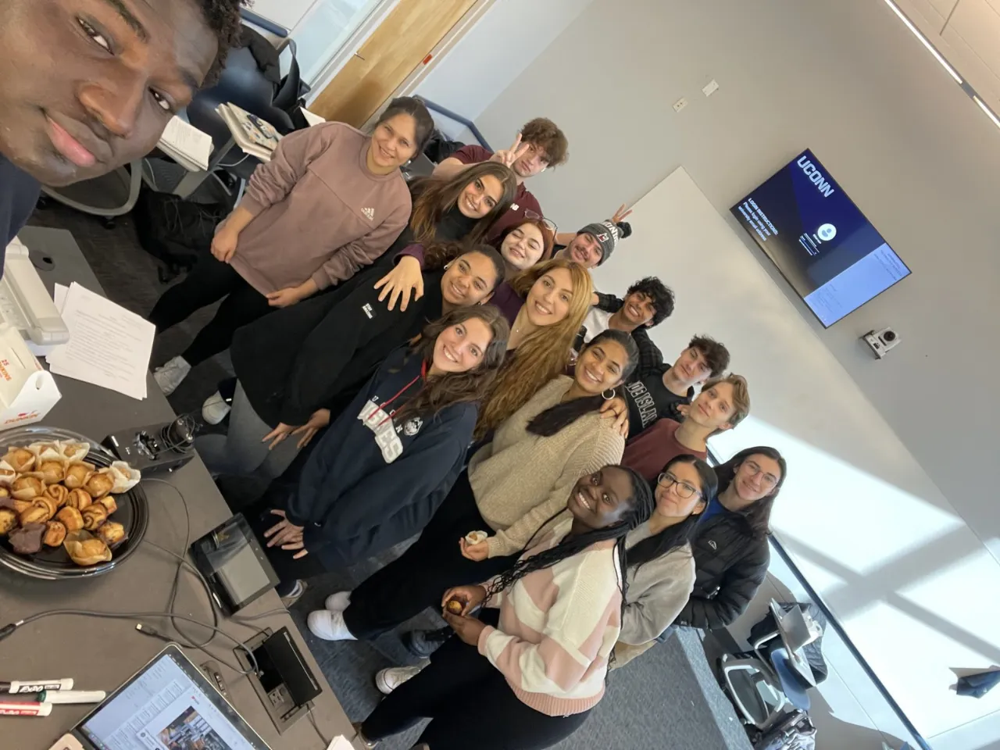

Photo : Salle Ovale, Bibliothèque nationale de France, Paris · Jean-Pierre Dalbéra · CC BY 2.0, recadrée, via Wikimedia Commons
« Un cours doit être exigeant sur ce que les étudiants apprennent, et souple sur la manière dont ils y parviennent. »
Extrait de ma philosophie d’enseignement
La question que je me pose en concevant un cours : à la fin du semestre, qu’est-ce que chaque étudiant saura faire, dire ou démontrer qui lui était difficile au départ ?

Cours
HST 230 · Histoire de la Shoah
Washtenaw Community College · responsable du cours
FREN 1101–1102 · Français débutant I et II
Université du Connecticut · onze groupes sur sept semestres, en pleine responsabilité
Français et anglais
Institut de langues Tak Sokhan, Tabriz
La révolution iranienne : histoire, mémoire et politique transnationale
Sources persanes traduites, histoire orale et fonds de l’Inclusive History Project
Évaluations des étudiants
Taux de réponse : 81 % (13 sur 16). Les commentaires sont cités dans leur langue d’origine.
“We were always pushed to speak in each class which really helped students learn how to speak more in French.”
“I love the way Madame Katayoun really focuses on engaging the entire class with the material.”
Enseignement de la Shoah
Belfer National Conference for Holocaust Education
United States Holocaust Memorial Museum
Certificats de formation, 24 heures chacun.
En cours
Conseillère pédagogique
Holocaust Awareness Museum and Education Center, Philadelphie
Programmes d’enseignement de la Shoah ; relecture scientifique des ressources pédagogiques.